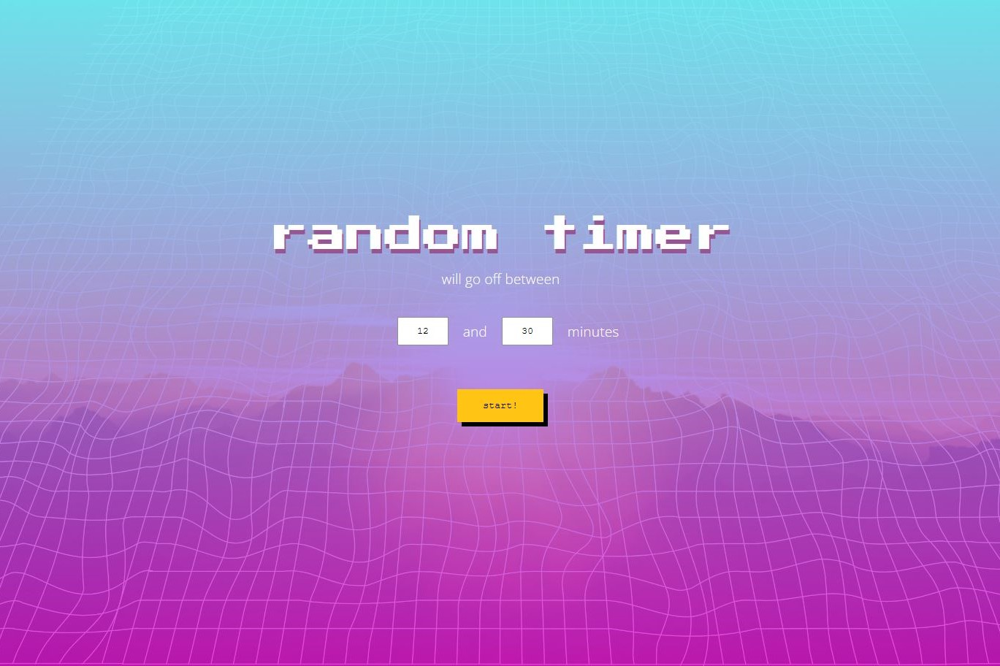
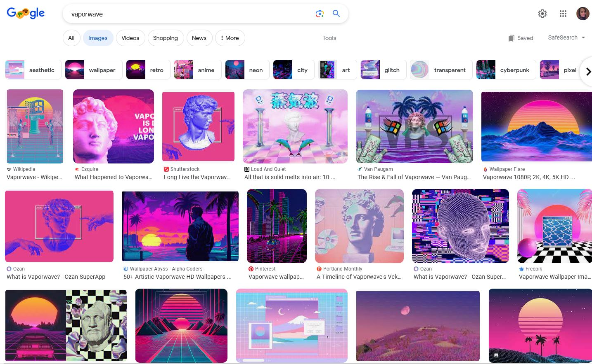

Random Timer App
This timer app counts down a random number of minutes between two values input by the user. It was created with React, Styled-Components, with graphics created in Adobe Illustrator and icons from Font-Awesome.
Purpose of the project
I built this timer because it was something I wanted to use personally. I often noticed that I had poor posture while sitting at my desk, and I needed reminders to correct it throughout the day. It made sense to set a timer to remind myself, but I didn’t want to always set the same time interval, because that could become too predictable.
None of the timers I use regularly have a random functionality, so I decided to create one. The user can set a range of values and the timer will calculate a random number of minutes in between those values. The user can choose to view the time remaining as it counts down, or leave it hidden.
Design
Since development of the app was relatively straight-foward, I wanted to challenge myself a bit more with the visual design. I am usually a fan of minimal, clean design, but an aesthetic I was intrigued by was vaporwave.
Vaporwave would be difficult to sum up here succinctly. For our purposes, vaporwave is a music sub-genre and art style that hit its peak popularity in the 2010s. It evokes nostalgia for 80s and 90s pop culture and the early internet age. Visually, it’s a chaotic cyberpunk mash-up of pastel colours (often pink and blue), mountains, sunsets, palm trees, grids, vintage computer graphics and so much more. Today a google image search returns the examples below:
There was a lot to work with, so I started with the elements I liked and tried to keep the chaos at a minimum.
I started with a pink and blue gradient in the background, with a small amount of transparency.
Next I created a warped grid SVG using Adobe Illustrator. The grid was transformed to give the illusion of one-point-perspective, since this is featured in a lot of vaporwave art; it was then layered behind the transparent gradient.
On large screen sizes a viewer may notice that the grid doesn’t cover the whole screen. I would usually prefer to have SVGs cover the whole background, but in this case it fits well with the vaporwave aesthetic, where grids will often not cover the whole design.
An image of a mountain sunset (from Unsplash) was placed behind the grid, and these layers blended together to create a unique, vaporwave inspired look.
Next, the html elements needed to be styled. The buttons were given hard lines and shadows inspired by old-school computer graphics, and primary buttons were filled with a deep yellow to form a triad with the pink and blue background.
There are a variety of fonts used in vaporwave. For the main title I used a retro font reminiscent of early arcade games, to complement the style of the buttons. To balance out the design and minimize clutter, the rest of the text was given a sans-serif font, and the inputs are simple white boxes.